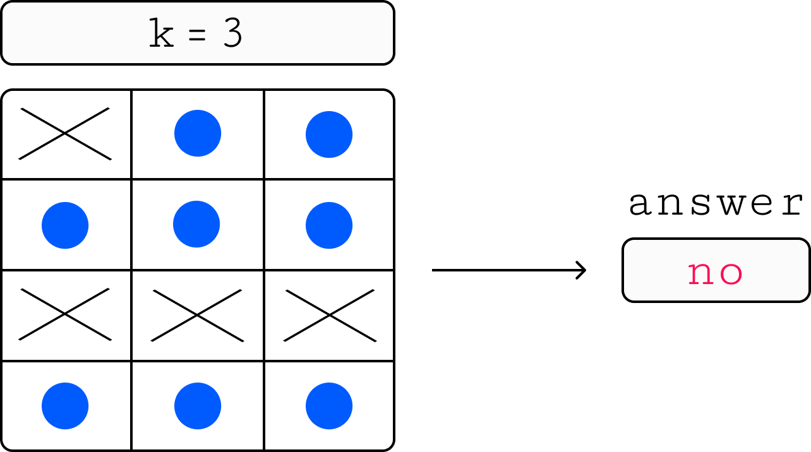

Список задач:
1 000 мс 256 мб
Андрей прошел собеседование на позицию разработчика в известном маркетплейсе. И теперь его спросили какую
зарплату он бы себе хотел. Андрей, недолго думая, написал на листочке число — случайный набор цифр, который
пришел ему в голову, ведь он знает, чем больше цифр — тем больше число. В такой зарплате Андрею, к сожалению,
отказали. Но его согласились принять на работу при условии, что он сотрет ровно одну цифру из своего числа.
Андрей очень хочет работать в этом маркетплейсе, но также и не хочет много терять в своей зарплате, поэтому
просит вас убрать в его числе одну цифру так, чтобы число осталось как можно больше. Обратите внимание, что если
изначальное число содержит всего одну цифру, то убрав ее, Андрей получит число 0.
Каждый тест состоит из нескольких наборов входных данных.
Первая строка содержит целое число t (1 ≤ t ≤ 10^5) — количество наборов входных данных.
Каждый набор тестовых данных содержит одно целое число s — зарплата, указанная Андреем. Обозначим количество
цифр в числе s как ∣s∣, тогда выполняется 1≤∣s∣≤10^5. Гарантируется, что число не содержит
ведущих нулей, а
также сумма количества цифр по всем тестам не превосходит 10^5.

Для каждого набора входных данных выведите наибольшую зарплату, которую может получить Андрей.
Входные данные
1
200000
Входные данные
3
9
0
9123
1 000 мс 256 мб
Антон учит Степана делить массивы одинаковой длины n друг на друга следующим образом: если ai нацело
делится на bi для всех 1 ≤ i ≤ n, то массив a делится на массив b.
В качестве упражнения, Степан всегда использует массив [ 1, 2, …, n] в качестве делителя. Теперь он
хочет посчитать количество возможных массивов a, которые делятся на заданный делитель. Но Антон
догадался, что таких массивов бесконечно много, поэтому для Степана он наложил на построение массива a
следующие ограничение: li ≤ ai ≤ ri для всех 1 ≤ i ≤ n, где
l и r — подготовленные заранее Антоном массивы.
Но после введения таких ограничений, посчитать ответ оказалось слишком трудно, поэтому ребята просят вас им
помочь.
Каждый тест состоит из нескольких наборов входных данных.
Первая строка содержит целое число t (1 ≤ t ≤ 10^5) — количество наборов входных данных.
Далее следуют описания наборов входных данных.
Первая строка каждого набора входных данных содержит целое число n (1 ≤ n ≤ 10^5).
Вторая строка каждого набора входных данных содержит n целых чисел li (1 ≤ li ≤ 10^9)
— массив l.
Третья строка каждого набора входных данных содержит n целых чисел ri (1 ≤ ri ≤ 10^9)
— массив r.
Гарантируется, что сумма n по всем наборам входных данных не превосходит 10^5.

Для каждого набора входных данных выведите количество возможных вариантов массива a при заданных
ограничениях. Так как ответ может быть очень большим, выведите остаток от деления ответа на 10^9 + 7.
В первом примере для заданных ограничений существует 4 подходящих массива: [1, 2, 3], [1, 4, 3], [2, 2, 3], [2,
4, 3].
В третьем примере ответ равен 41916958083, но так как вывести нужно остаток от деления на 10^9 + 7, получаем
41916958083 mod(10^9 + 7) = 916957796.
Входные данные
3
3
1 1 1
2 5 5
5
1 2 7 10 20
1 4 10 30 40
4
1000 1000 1000 1000
2000 2000 2000 2000
2 000 мс 256 мб
Вы разрабатываете систему маппинга товаров в идентификаторы. Идентификаторы товаров могут меняться. Кроме того,
система должна показывать, какой был идентификатор у данного товара в данный момент времени в прошлом.
Формально, система получает один запрос в каждую секунду от первой до n-й.
Запрос CHANGE name id назначает (или меняет) товару с именем name
идентификатор id. Если в данный момент существует товар с идентификатором id,
то его идентификатор сбрасывается.
Запрос GET id time должен показать, товар с каким именем имел идентификатор id
после выполнения запроса в секунду под номером time.
Каждый тест состоит из нескольких наборов входных данных.
Первая строка содержит целое число t (1 ≤ t ≤ 3⋅10^5) — количество наборов входных данных.
Далее следуют описания наборов входных данных.
Первая строка каждого набора входных данных содержит одно целое число n (1 ≤ n ≤ 3⋅10^5) —
количество запросов к системе.
Следующие n строк каждого набора входных данных содержат по одному запросу к системе в одном из двух
форматов:

Для каждого запроса GET выведите соответствующее имя товара. Если в заданный момент времени нет товара с таким id, выведите 404.
Входные данные
2
2
CHANGE product1 10
GET 10 1
6
CHANGE product1 10
CHANGE product1 20
GET 10 1
GET 10 3
CHANGE product2 20
GET 20 5
1 000 мс 256 мб
В этой задаче вам необходимо написать валидатор для выходных данных задачи.
Формулировка задачи
Дан массив a из n целых чисел. Выведите отсортированный массив.
Формат входных данных
Первая строка содержит целое число n (1 ≤ n ≤ 10^5).
Вторая строка содержит n целых чисел ai (−10^9 ≤ ai ≤ 10^9), разделенных одним
пробелом.
Все числа не содержат ведущих нулей. Перед первым и после последнего числа в строках нет пробелов.
Формат выходных данных
Выведите одну строку из n чисел, разделённых одним пробелом — ответ на задачу. Ответ не должен
содержать пробелов перед первым и после последнего числа.
Гарантируется, что первая строка содержит целое число t (1 ≤ t ≤ 10^5) — количество наборов
входных данных.
Гарантируется, что входной файл содержит ровно 3 ⋅t+ 1 строку.
Гарантируется, что первая строка каждого набора входных данных содержит целое число n (1 ≤ n ≤
10^5).
Гарантируется, что вторая строка каждого набора входных данных содержит n целых чисел ai
(-10^9 ≤ ai ≤ 10^9), разделенных одним пробелом.
В третьей строке находятся выходные данные, которые надо проверить на корректность.
Числа n и ai не содержат ведущих нулей.
Гарантируется, что размер входного файла не превышает 10Мб.
Для каждого набора входных данных выведите YES если входные данные удовлетворяют требуемому формату, иначе выведите NO.
Входные данные
6
1
228
228
1
228
hello
1
228
-1
4
1 2 3 4
1 2 4
2
2 2
2 2 8
2
1 2
2 1
1 000 мс 256 мб
Реализуйте конвертер из формата YAML в формат INI.
Каждый набор входных данных является корректным YAML-файлом со следующими ограничениями:
Каждый тест состоит из нескольких наборов входных данных.
Первая строка содержит целое число t (1 ≤ t ≤ 5⋅10^4) — количество наборов входных данных.
Далее следуют описания наборов входных данных.
Первая строка каждого набора входных данных содержит одно целое число n (1 ≤ n ≤ 10^5) —
количество строк в YAML-файле.
Следующие n строк содержат сам YAML-файл.
Гарантируется, что размер входных данных не превосходит 10 мегабайт.
Для каждого набора входных данных выведите соответствующий INI-файл. После вывода каждого INI-файла выводите одну
пустую строку. Обратите внимание, ваш ответ будет проверен с точностью до каждого пробела и переноса строки.
Гарантируется, что размер корректных выходных данных не превосходит 10 мегабайт.
Об INI - файле
Об YAML - файле
Входные данные
2
16
a: b
b:
c:
d: e
d: e
e: f
a:
a: hello
b:
a: hi
f: a
route: contest
good:
luck:
for: you
c: d
1
ozon: route
6 000 мс 256 мб
Перед вами расширеннаяверсия игры крестики-нолики.
В привычной всем игре победившим считается тот, кто собрал первым последовательность из трёх крестиков или
ноликов в одной строке, столбце или диагонали на доске из трёх строк и трёх столбцов.
В расширенной версии игры победителем считается тот, кто собрал первым последовательность из k
крестиков или ноликов на доске из n строк и m столбцов.
Ваша задача — по доске с некоторым (не обязательно корректным) состоянием игры понять, можно ли поставить ровно
один крестик так, чтобы крестики победили. Например, если в данном состоянии доски уже есть последовательность
из хотя бы k крестиков или ноликов, то победитель уже есть, а значит, ровно один крестик для победы
поставить нельзя.
Каждый тест состоит из нескольких наборов входных данных.
Первая строка содержит целое число t (1 ≤ t ≤ 10^3) — количество наборов входных данных.
Далее следуют описания наборов входных данных.
Первая строка каждого набора входных данных содержит одно целое число k (1 ≤ k ≤ 10^5) —
необходимая для победы длина строки, столбца или диагонали.
Вторая строка каждого набора входных данных содержит два целых числа n и m (1 ≤ n ≤
10^4, 1 ≤ m ≤ 10^7) — количество строк и столбцов на доске.
Следующие n строк каждого набора входных данных содержат по m символов в каждом, где
X обозначает крестик, 0 обозначает нолик, а . обозначает
пустую клетку.
Гарантируется что суммарный размер досок по всем наборам входных данных не превосходит 10^7, то есть ∑ n ⋅
m ≤ 10^7.
Для каждого набора входных данных выведите YES, если можно поставить ровно один крестик для победы, иначе выведите NO.
Входные данные
3
3
3 3
X..
..O
OOX
2
5 3
...
O.O
X.O
...
...
3
5 5
X.X..
.....
.OX..
..O..
...O.
2 000 мс 256 мб
В королевстве Артистия готовится грандиозная выставка, которая пройдет в знаменитой Галерее искусств. Мастера со
всего королевства прислали свои лучшие картины, и кураторам выставки предстоит сложная задача — разместить все
произведения искусства в специальные защитные коробки, чтобы транспортировать их в галерею.
У вас есть n коробок разного размера, каждая с определенной шириной ai и длиной bi.
Также у вас есть m картин, каждая с заданными шириной cj и длиной dj. Каждая картина
должна быть упакована в коробку, в которую она полностью вмещается (минимальная и максимальная
стороны картины должны быть меньше либо равны минимальной и максимальной сторонам коробки соответственно), при
этом коробки могут уместить неограниченное количество картин.
Вам необходимо найти способ упаковать все картины, используя минимальное количество коробок, чтобы все картины
благополучно достигли Галереи искусств.
Каждый тест состоит из нескольких наборов входных данных.
Первая строка содержит целое число t (1 ≤ t ≤ 10^5) — количество наборов входных данных.
Далее следует описание наборов входных данных.
Первая строка каждого набора входных данных содержит одно целое число n (1 ≤ n ≤ 10^5) —
количество коробок.
В следующих n строках каждого набора входных данных содержатся два целых числа ai, bi (1 ≤
ai, bi ≤ 10^9) — ширина и длина коробки i.
В следующей строке каждого набора входных данных содержатся одно целое число m (1 ≤ m ≤ 10^5)
— количество картин.
В следующих m строках каждого набора входных данных содержатся два целых числа cj, dj (1 ≤
cj, dj ≤ 10^9) — ширина и длина картины j.
Выведите одно целое число — минимальное количество коробок, необходимых для упаковки всех картин. Если ответа нет
— выведите -1.
Для первого набора входных данных чтобы упаковать все коробки нам необходимы коробки под номером 1 и 3:
Входные данные
2
3
1 10
3 3
5 2
3
4 2
9 1
2 2
2
1 10
3 3
1
4 2
1 000 мс 256 мб
В сети из n компьютеров произошёл сбой — все компьютеры выключились. Вы хотите включить максимально возможное количество компьютеров. Для этого у вас есть m рычагов, i-й рычаг меняет состояние ai-го и bi-го компьютеров на противоположное:
Каждый тест состоит из нескольких наборов входных данных.
Первая строка содержит целое число t (1 ≤ t ≤ 5 ⋅ 10^4) — количество наборов входных данных.
Далее следуют описания наборов входных данных.
Первая строка каждого набора входных данных содержит два целых числа n и m (2 ≤ n ≤
10^5, 1 ≤ m ≤ 10^5) — количество компьютеров в сети и количество рычагов, соответственно.
Следующие m строк каждого набора входных данных содержат по два целых числа ai и bi
(1 ≤ ai, bi ≤ n, ai ≠ bi) — номера компьютеров, состояние которых меняет i-й
рычаг.
Гарантируется, что сумма n и сумма m по всем наборам входных данных не превосходит 10^5.
Для каждого набора входных данных выведите три строки.
Первая строка должна содержать ответ на задачу — максимально возможное количество включенных компьютеров.
Вторая строка должна содержать число k — количество использованных рычагов.
Третья строка должна содержать k чисел, разделенных пробелом — номера использованных рычагов.
Каждый рычаг можно использовать не более одного раза. Обратите внимание, минимизировать количество
использованных рычагов не требуется. Если правильных ответов несколько, можете вывести любой.
Входные данные
3
4 4
1 2
2 3
3 4
4 1
5 4
1 2
3 4
4 5
3 5
6 4
2 3
2 3
4 5
5 6